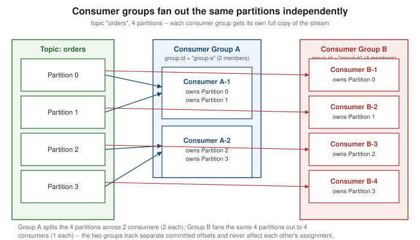

Kafka Consumers
|
This content was generated with the assistance of AI and should be verified against the official documentation before being relied on in production. |
A Kafka consumer is not a passive listener — it is a client that actively pulls records from the brokers it is
subscribed to, on its own schedule, tracking exactly how far it has read for itself. This page works through the
org.apache.kafka:kafka-clients KafkaConsumer API end to end: how consumers organize into groups and split a
topic’s partitions among themselves, the poll loop that drives everything else, how that group membership is
negotiated and re-negotiated (a rebalance) — both the classic eager/cooperative-sticky assignors and the newer,
broker-driven KIP-848 protocol — how offsets are committed and rewound, how fetching is tuned, and how to shut a
consumer down cleanly. It assumes the shared vocabulary from
Getting Started with Messaging and the topic/partition/broker model
from Kafka Architecture; the at-least-once/ordering guarantees
that offset commits actually buy an application are covered in full on
Delivery Guarantees — this page covers the same commits and
offsets strictly from the consumer-API angle, how to call them, not why they produce the guarantee they do.
Consumer groups and partition ownership
Every KafkaConsumer belongs to a consumer group, identified by group.id. Kafka enforces one hard rule for
every group: a given partition is assigned to at most one consumer within that group at any moment — never two
members of the same group reading the same partition concurrently. A group with fewer members than the topic has
partitions leaves some members owning several partitions; a group with more members than partitions leaves the
excess members idle, since a partition cannot be split further within a single group. This is the mechanism
behind the point-to-point ("competing consumers") delivery model discussed on
Messaging Models and Patterns — parallelism inside one
group is capped at the partition count, and the only way past that cap is more partitions, not more consumers.
Two different groups reading the same topic are entirely independent of each other: each group maintains its own
committed offsets and its own partition assignment, so a slow or crashed consumer in one group never affects the
other group’s progress. The figure below shows this concretely — four partitions of the same orders topic,
fanned out separately to a two-member group and a four-member group.

The poll loop
A KafkaConsumer does nothing on its own between calls to poll() — there is no background thread silently
delivering records to a callback the way a message-driven listener might suggest. poll(Duration) is the single
call that does everything: it fetches new records (if any are available within the given timeout), and it is
also how the consumer sends its periodic heartbeat to the group coordinator broker, proving to the group that
this member is still alive. Skipping poll() for too long is therefore not just "no new records arrive" — it is
indistinguishable, from the coordinator’s point of view, from the consumer having died, which triggers a
rebalance that evicts it from the group.
Two configurations bound how long an application is allowed to spend processing one batch before the coordinator gives up on it:
| Config | Meaning |
|---|---|
|
The maximum time allowed between two calls to |
|
The maximum number of records a single call to |
These two settings are frequently tuned together: a consumer doing expensive per-record work (an external API
call, a heavy transformation) either lowers max.poll.records so each batch finishes well inside the default
interval, or raises max.poll.interval.ms to match a batch size it cannot shrink further. Both are documented,
alongside every other consumer setting on this page, in the generated configuration reference; see
Apache Kafka — Consumer Configuration Reference.
Subscribing vs. assigning
A consumer attaches to partitions in one of two mutually exclusive ways:
-
subscribe(Collection<String>)(or the regex/pattern overloads) hands topic names to Kafka and lets the group coordinator decide which partitions this consumer owns, coordinating with every other member of the samegroup.id. This is the normal path for anything that wants automatic load-balancing across instances and automatic reassignment when instances come and go — it is what every example on this page other than this section uses. -
assign(Collection<TopicPartition>)hands specific partitions to the consumer directly, bypassing group coordination entirely. A consumer that callsassign()does not join a consumer group in any coordinating sense — there is no rebalance, no partition ownership negotiation, and no automatic reassignment if the process dies; the caller is fully responsible for deciding, and if needed persisting, which partitions it reads. This fits a use case that needs precise, application-controlled partition ownership — a Kafka Streams-style stateful processor pinned to specific partitions, or a tool that always needs to read every partition of a topic from one process rather than sharing them.
subscribe() and assign() cannot be mixed on the same consumer instance — calling one after the other throws
an IllegalStateException. See
Apache Kafka Javadoc — KafkaConsumer for the full method set behind both paths.
Partition assignment and rebalancing
Whenever group membership changes — a consumer joins, a consumer leaves cleanly, a consumer is presumed dead
after missing max.poll.interval.ms, or the subscribed topic’s partition count changes — the group’s partitions
have to be reassigned across whatever members now exist. This event is a rebalance, and how disruptive it is
depends on which of two fundamentally different rebalance protocols the group runs.
Eager vs. cooperative-sticky assignment
The classic, eager rebalance protocol (RangeAssignor, StickyAssignor) requires every member of the group to
give up all of its owned partitions before the new assignment is computed, even partitions that will simply be
reassigned right back to the same consumer. That "stop the world" step guarantees no partition is ever
double-owned during the transition, at the cost of pausing every member’s consumption — not just the joining or
leaving one’s — for the full rebalance.
The cooperative-sticky assignor (CooperativeStickyAssignor) improves on this with incremental cooperative
rebalancing: a member only gives up the specific partitions the new assignment is actually moving away from it,
and keeps consuming from every partition it keeps, throughout the rebalance. A cooperative rebalance can take more
than one round trip through the group coordinator to fully converge, but each round only interrupts the members
whose assignment is actually changing, which is the reason it is the recommended assignor for any group where
rebalance pauses are a real operational concern.
props.put(ConsumerConfig.PARTITION_ASSIGNMENT_STRATEGY_CONFIG,
CooperativeStickyAssignor.class.getName());partition.assignment.strategy accepts a list of assignor class names, tried in order; mixing an eager assignor
and CooperativeStickyAssignor across the same group’s members during a rolling upgrade is explicitly supported
as a migration path, but running it long-term is not. See
Apache Kafka
Javadoc — CooperativeStickyAssignor for the assignor itself.
The KIP-848 consumer group protocol
Both assignors above still run under the classic group protocol, where the rebalance logic — who computes the
new assignment, how membership changes propagate — lives largely on the client. Starting with Kafka 4.0, a
rewritten, broker-driven protocol is generally available: the group coordinator itself now owns assignment
computation and membership changes are reconciled incrementally and continuously, rather than through the
classic protocol’s JoinGroup/SyncGroup round trips. A consumer opts into it with:
props.put(ConsumerConfig.GROUP_PROTOCOL_CONFIG, "consumer");With group.protocol=consumer, assignment is computed server-side by the group coordinator using a
broker-selected assignor (tunable with group.remote.assignor), and rebalances are reported to have
dramatically lower latency than either classic protocol, because only the members whose assignment actually
changes are involved at all — not the whole group, and not the multi-round-trip negotiation the classic
protocol’s JoinGroup/SyncGroup exchange requires even under cooperative-sticky. The new protocol currently
supports only server-side assignors — a custom client-side ConsumerPartitionAssignor is not usable with
group.protocol=consumer — so a consumer relying on a fully custom assignment strategy stays on the classic
protocol (the default) until that gap closes. See
Apache Kafka Documentation — Consumer
Rebalance Protocol for the full comparison against the classic protocol, and
KIP-848 — The Next Generation of the Consumer Rebalance Protocol for the design this operational page implements.
The sequence below shows a rebalance under the classic protocol when a third consumer joins a two-member group: both existing members have partitions revoked and reassigned, and the new member receives its share.
Static membership
By default, a consumer that restarts (a deployment rollout, a short crash-and-recover) is treated as a brand-new
group member — it gets a fresh member id and triggers a rebalance the moment it leaves and another when it
rejoins. Static membership avoids both: setting a stable group.instance.id tells the coordinator this
consumer has a persistent identity across restarts, so a restart within session.timeout.ms is treated as the
same member reconnecting, not a membership change, and no rebalance is triggered either time.
props.put(ConsumerConfig.GROUP_INSTANCE_ID_CONFIG, "order-processor-3");Each static member’s group.instance.id must be unique within the group — two consumers started with the same
value are rejected with a FencedInstanceIdException. This is the recommended way to avoid rebalance storms
during a rolling deployment of a large consumer group, where every pod restarting in turn would otherwise
trigger a rebalance per restart. See
Apache Kafka — Consumer Configuration Reference for
group.instance.id and the session/heartbeat timeouts it interacts with.
Offsets and commits
An offset is a per-partition, monotonically increasing position; committing an offset tells the group coordinator "this group has consumed up through here" so that a restarted or rebalanced consumer resumes from the right place instead of from the beginning. This section covers how to call the commit and seek APIs; what those calls actually buy an application in terms of at-least-once delivery and duplicate handling is covered in full on Delivery Guarantees.
Automatic commits
With enable.auto.commit=true (the default), the consumer periodically commits the latest offset returned by
poll() on a fixed interval (auto.commit.interval.ms, default 5000ms), with no application involvement. This
is the simplest option, and the one used by the first example on
Getting Started with Messaging, but it commits on a timer that has
no relationship to whether the records it covers were actually finished processing — a crash between an
auto-commit and the completion of the work it covered loses track of that work having been unfinished.
Manual commits: commitSync() and commitAsync()
Setting enable.auto.commit=false hands offset commits entirely to the application, called only once processing
has actually finished:
-
commitSync()blocks until the broker acknowledges the commit (or throws after retries are exhausted). It is the simpler, safer default — the call does not return until the commit is durable. -
commitAsync()sends the commit and returns immediately, optionally with anOffsetCommitCallbackinvoked once the broker responds. It avoids blocking the poll loop on commit latency, at the cost of not knowing whether a given commit actually succeeded before the next one is sent — a common pattern usescommitAsync()for every regular commit and a finalcommitSync()on shutdown, so the last commit before the consumer closes is guaranteed to have completed.
Committing specific offsets
Both commit methods also accept an explicit Map<TopicPartition, OffsetAndMetadata>, which is what a consumer
that processes several partitions in a batch, or that wants to commit mid-batch rather than only after the whole
poll() result is handled, uses instead of committing the consumer’s whole current position at once:
Map<TopicPartition, OffsetAndMetadata> offsets = new HashMap<>();
offsets.put(new TopicPartition("orders", record.partition()),
new OffsetAndMetadata(record.offset() + 1)); // commit *past* this record, not its own offset
consumer.commitSync(offsets);The committed offset is always the position of the next record to read, not the offset of the last record
processed — record.offset() + 1 above, not record.offset(). See
Apache Kafka Javadoc — KafkaConsumer, "Manual Offset Control" for both commit methods and this offset-plus-one convention.
auto.offset.reset
auto.offset.reset only applies when a consumer group has no committed offset yet for a partition it is
about to read — a brand-new group.id, or a committed offset that has aged out past the broker’s
offsets.retention.minutes. It decides where that first read starts:
| Value | Behavior |
|---|---|
|
Start from the end of the partition — only records produced from this point on are seen; anything already in the log is skipped. |
|
Start from the beginning of the partition’s retained log — every retained record is read, including ones produced long before this consumer group existed. |
|
Throw an exception instead of guessing, if no committed offset exists. Used when silently picking a starting point would be worse than failing loudly and requiring an explicit decision. |
Reacting to rebalances: ConsumerRebalanceListener
A ConsumerRebalanceListener passed to subscribe() is invoked synchronously, from inside the thread that calls
poll(), whenever partitions are revoked from or assigned to this consumer — the exact two callbacks shown in
the mermaid rebalance sequence above:
consumer.subscribe(Collections.singletonList("orders"), new ConsumerRebalanceListener() {
@Override
public void onPartitionsRevoked(Collection<TopicPartition> partitions) {
// commit whatever this consumer has already processed for these partitions before losing ownership --
// otherwise a rebalance landing between poll() and commit() can turn into a lost or duplicated batch
consumer.commitSync(currentOffsets(partitions));
}
@Override
public void onPartitionsAssigned(Collection<TopicPartition> partitions) {
// an opportunity to seek() newly-owned partitions to a custom starting position (see below) before
// the next poll() fetches from them
}
});onPartitionsRevoked is the correct, and only reliable, place to commit offsets in response to losing a
partition — by the time poll() returns control to application code again, this consumer may no longer own the
partitions whose offsets it is trying to commit. See
Apache Kafka
Javadoc — ConsumerRebalanceListener for the full contract, including the incremental cooperative-rebalancing
variant of these callbacks.
Seeking: seek(), seekToBeginning(), seekToEnd()
Independently of committed offsets, a consumer can move its own read position explicitly:
| Method | Effect |
|---|---|
|
Jump to a specific offset on a specific partition — replay from an exact known position, for example one recovered from an external store rather than Kafka’s own offset topic. |
|
Jump to the earliest retained offset on the given partitions — a full replay of whatever the log still
retains, regardless of |
|
Jump to the log end offset on the given partitions — skip everything currently retained and only see records produced from this point on. |
A seek only takes effect on partitions the consumer currently owns, and is typically called from inside
onPartitionsAssigned() so it runs exactly once, right after ownership is established, before the next poll()
fetches anything. See
Apache Kafka Javadoc — KafkaConsumer for the full set of seek and position-inspection methods (position(), committed()).
Fetch tuning
A handful of fetch.* settings control how the consumer batches its underlying Fetch requests to the broker,
trading latency against network and CPU efficiency:
| Config | Meaning |
|---|---|
|
The minimum number of bytes the broker should accumulate before answering a fetch request. Default 1 (answer
immediately with whatever is available). Raising it lets the broker batch more data per request at the cost of
added latency, bounded by |
|
The longest the broker will wait to satisfy |
|
An upper bound on the total size of one fetch response across all partitions. Default 50MB. |
|
An upper bound on how many bytes of any single partition one fetch response may include. Default 1MB — a message larger than this needs the setting raised, or the broker will be unable to make progress on that partition for this consumer. |
Raising fetch.min.bytes (with a correspondingly generous fetch.max.wait.ms) is the standard throughput lever
for a high-volume consumer that can tolerate a little added latency in exchange for fewer, larger fetch requests.
See Apache Kafka — Consumer Configuration Reference
for the complete list and every setting’s exact default.
Deserializers
key.deserializer and value.deserializer mirror the producer’s serializers exactly in reverse — a
deserializer converts the raw bytes Kafka stores back into the typed key and value a ConsumerRecord exposes.
kafka-clients ships StringDeserializer, ByteArrayDeserializer, IntegerDeserializer, and the other
primitive types out of the box; a schema-based format (Avro, Protobuf, JSON Schema) instead configures a
schema-registry-aware deserializer that fetches the matching writer schema before decoding. A mismatch between
what a producer actually serialized and what a consumer configures as its deserializer fails loudly per record,
as a SerializationException thrown out of poll(), rather than silently producing garbage data. See
Apache Kafka Javadoc — Deserializer for the interface every deserializer, built-in or custom, implements.
Graceful shutdown with wakeup()
KafkaConsumer is not thread-safe — every method except one must only ever be called from the single thread
that owns the consumer. wakeup() is that one exception: it is explicitly safe to call from a different
thread, typically a JVM shutdown hook, and its whole purpose is to interrupt a poll() call that is currently
blocked waiting for records. A call to wakeup() causes the consumer’s poll() (or any other blocking consumer
call in progress, or the next one if none is in progress) to throw org.apache.kafka.common.errors.WakeupException,
which the poll loop catches to break out cleanly and commit and close the consumer, instead of the process being
killed mid-batch by a container orchestrator’s SIGTERM/SIGKILL timeout. See
Apache Kafka Javadoc — KafkaConsumer for this documented pattern, under its own "Multi-threaded Processing" and shutdown discussion.
A complete consumer example
The example below against kafka-clients 4.3 combines everything above into one realistic consumer: manual
commits after processing, max.poll.records tuned down to bound batch processing time, and a shutdown hook that
calls wakeup() so the process exits only after committing whatever it has already finished.
package com.example.orders;
import java.time.Duration;
import java.util.Collections;
import java.util.Properties;
import java.util.concurrent.atomic.AtomicBoolean;
import org.apache.kafka.clients.consumer.ConsumerConfig;
import org.apache.kafka.clients.consumer.ConsumerRecord;
import org.apache.kafka.clients.consumer.ConsumerRecords;
import org.apache.kafka.clients.consumer.KafkaConsumer;
import org.apache.kafka.common.errors.WakeupException;
import org.apache.kafka.common.serialization.StringDeserializer;
public class OrderProcessingConsumer {
private final KafkaConsumer<String, String> consumer;
private final AtomicBoolean shuttingDown = new AtomicBoolean(false);
public OrderProcessingConsumer() {
Properties props = new Properties();
props.put(ConsumerConfig.BOOTSTRAP_SERVERS_CONFIG, "localhost:9092");
props.put(ConsumerConfig.GROUP_ID_CONFIG, "order-processors");
props.put(ConsumerConfig.KEY_DESERIALIZER_CLASS_CONFIG, StringDeserializer.class.getName());
props.put(ConsumerConfig.VALUE_DESERIALIZER_CLASS_CONFIG, StringDeserializer.class.getName());
// manual commits: the offset only advances once processing has actually finished
props.put(ConsumerConfig.ENABLE_AUTO_COMMIT_CONFIG, false);
// fail loudly rather than silently pick a starting point if this group has no committed offset yet
props.put(ConsumerConfig.AUTO_OFFSET_RESET_CONFIG, "earliest");
// keep each batch small enough that processing it never risks exceeding max.poll.interval.ms
props.put(ConsumerConfig.MAX_POLL_RECORDS_CONFIG, 200);
this.consumer = new KafkaConsumer<>(props);
}
public void run() {
// registered here, not in main(), so the hook always has a live reference to this exact consumer
Runtime.getRuntime().addShutdownHook(new Thread(this::triggerShutdown, "order-consumer-shutdown"));
try {
consumer.subscribe(Collections.singletonList("orders"));
while (!shuttingDown.get()) {
ConsumerRecords<String, String> records = consumer.poll(Duration.ofMillis(500));
for (ConsumerRecord<String, String> record : records) {
process(record);
}
if (!records.isEmpty()) {
consumer.commitSync(); // offset only advances once every record in this batch was processed
}
}
} catch (WakeupException e) {
// thrown by poll() once wakeup() runs on the shutdown-hook thread -- this is the expected exit
// signal, not a failure, as long as it happened because we asked for it below
if (!shuttingDown.get()) {
throw e;
}
} finally {
try {
consumer.commitSync(); // best-effort final commit for whatever finished before shutdown began
} finally {
consumer.close();
}
}
}
private void triggerShutdown() {
shuttingDown.set(true);
consumer.wakeup(); // the one KafkaConsumer method safe to call from a thread other than the poll loop's
}
private void process(ConsumerRecord<String, String> record) {
// apply the order; a crash here, before commitSync() runs, causes a redelivery of this same record
// (see the Delivery Guarantees page for what that redelivery means for an at-least-once consumer)
}
public static void main(String[] args) {
new OrderProcessingConsumer().run();
}
}This is the documented "Multi-threaded Processing" shutdown pattern — wakeup() called from a shutdown hook,
WakeupException caught inside the poll loop — combined with the "Manual Offset Control" commit pattern from
the same class. See
Apache Kafka Javadoc — KafkaConsumer for both patterns in full, and
Apache Kafka — Consumer Configuration Reference for
every ConsumerConfig constant used above. For the corresponding producer-side API, see
Kafka Producers.